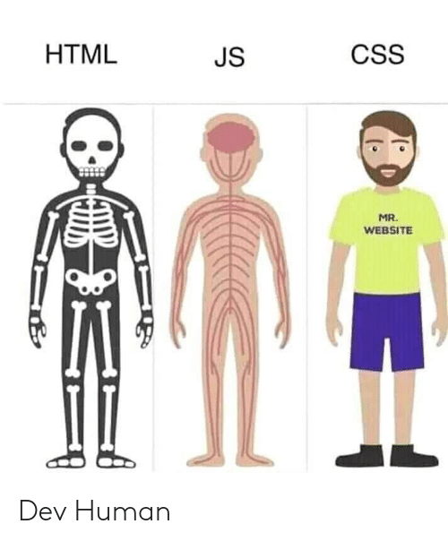

 JavaScript is a dynamic scripting/programming language designed to control the behaviour of different elements on a webpage. JavaScript is argued by many to be the most important programming language today and is by far the most popular language with just under 70% of developers employing it. JavaScript is used in web design for many reasons, with its primary use being the creation of responsive, interactive elements for web pages. It can be used to change and update HTML and CSS elements on a webpage dynamically. JavaScript can also be used to get and give data to and from sources across the web. Overall JavaScript has many uses in web development with its vast array of libraries and their functionality.
Like CSS, JavaScript was created shortly after HTML in the mid 90's by Brendan Eich while he worked at Netscape. Originally created as LiveScript the language was established with the purpose of utilizing it both in the browser and on the server. The language became more widely used in late 1995 as Microsoft attempted to reverse-engineer it for their new browser (Internet Explorer) in their browser war against Netscape. In 1997 ECMA (European Computer Manufacturers Association) took over the job of creating language specifications for JavaScript due to its rapid growth, this led to the creation of ECMAScript a scripting language specification used to standardise JavaScript. Through the early 2000's client side scripting was stagnant, with very little progress in the field. That was till 2005 which proved to be big for JavaScript with the introduction of AJAX which greatly improved user experience. JavaScript has grown exponentially since its rocky start to become the most popular programming language today.
AJAX (Asynchronous JavaScript and XML) is a set of web development techniques used to read data from and send data to web servers asynchronously (parallel to the browser running). AJAX is really powerful as it allows a browser to be changed and adapted without being refreshed. Below is an example of AJAX being used to asynchronously gather data from a website store the data as a JSON file format and display certain attributes of this data.
Total Cases : Total Deaths :
Another important use for JavaScript is Form validation. Forms are a crucial part of HTML as they allow user information to be processed through the web page, this opens new doors for user accounts and comment. Forms come in many styles and gather user information and form validation can ensure that this information being submitted is of the correct format. Below is a Form that you can fill out and send to test JavaScript's form validation (please note none of this information is gathered).